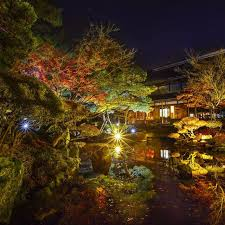

１月
賽の神（どんど焼）🔍
彌彦神社🔍
越後妻有 雪花火🔍
２月
十日町雪まつり🔍

本成寺鬼踊り🔍
灯の回廊🔍
３月
岩室温泉 ひな巡り🔍
秋葉区パンまつり🔍
田上 うめまつり🔍
４月
にいがたカナール彩🔍
白山さまの春まつり🔍
村松公園桜まつり🔍
５月
古町どんどん🔍
十日町きものまつり🔍
新潟ふるさと村GWフェスティバル🔍
６月
白根大凧合戦🔍
しばたあやめまつり🔍
新潟花街茶屋🔍
７月
糸魚川祇園祭🔍
弥彦燈籠まつり🔍
ぎおん柏崎まつり 海の大花火大会🔍
８月
新潟まつり🔍
長岡まつり大花火大会🔍
胎内星まつり🔍
９月
新潟オクトーバーフェスト🔍
佐渡国際トライアスロン大会🔍

北方文化博物館 観月会🔍
１０月
新潟シティマラソン🔍
三条マルシェ🔍
にいつハロウィン🔍
１１月
北方文化博物館 紅葉ライトアップ🔍
新潟うまさぎっしり博🔍
いくとぴあ食花 🔍
１２月
NiiGATA CHRiSTMAS MARKET🔍
湯沢冬花火2025🔍
十日町雪まつり🔍